1. Fibonacci
The smallest recurrence that reveals repeated work
Both recursive calls are required. Merging repeated arguments produces a dependency DAG; evaluating it in order produces the DP array.
- State
- Goal
- Compute .
- Base cases
- and .
On this page
- Problem overview and examples
- Block 01 -- recursive code
- Block 02 -- call fib(6)
- Block 03 -- reach the first completed subproblem
- Block 04 -- return fib(4)
- Block 05 -- finish fib(5)
- Block 06 -- expand the root's second call
- Block 07 -- complete naive fib(6)
- Memo Block 01 -- top-down memoized code
- Memo Block 02 -- merge the two base states
- Memo Block 03 -- memoize F(2)
- Memo Block 04 -- memoize F(3)
- Memo Block 05 -- memoize F(4)
- Memo Block 06 -- memoize F(5)
- Memo Block 07 -- the final vertical DAG
- Bottom-up Block 01 -- array code
- Bottom-up Block 02 -- update dp[2]
- Bottom-up Block 03 -- update dp[3]
- Bottom-up Block 04 -- update dp[4]
- Bottom-up Block 05 -- update dp[5]
- Bottom-up Block 06 -- update dp[6]
Problem overview and examples
Problem. Compute the th Fibonacci number, with , , and for .
Example 1 (used below). Input: . Output: .
Example 2. Input: . Output: .
The same recurrence is evaluated as a call tree, a memoized DAG, and a DP array.
Block 01 -- recursive code
The state is one integer n. Each non-base call must evaluate both recursive values.
def fib(n):
# Base case 1.
if n == 0:
return 0
# Base case 2.
if n == 1:
return 1
# Recursive choices.
val1 = fib(n - 1)
val2 = fib(n - 2)
return val1 + val2
print(fib(6)) # 8Both child values are required; this recurrence adds results rather than choosing between them.
Block 02 -- call fib(6)
The root requests F(6). Faint vertices mark the remaining call occurrences.
Block 03 -- reach the first completed subproblem
Follow val1 down the left spine. Separate fib(1) and fib(0) base calls complete fib(2).
Block 04 -- return fib(4)
Continue depth first: fib(3) and then fib(4) receive both returned values.
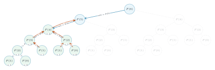
Block 05 -- finish fib(5)
The left root subtree is complete. Repeated states are still repeated calls.
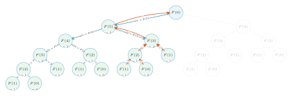
Block 06 -- expand the root's second call
Enter the separate fib(4) occurrence and finish its fib(3) child.
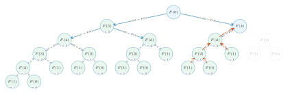
Block 07 -- complete naive fib(6)
Every occurrence returns. The root combines 5 and 3 to return 8.
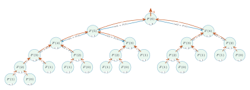
Naive recursion makes 25 calls although only seven distinct states exist.
Memo Block 01 -- top-down memoized code
memo[n] stores a completed state. A repeated call returns without rebuilding its subtree.
N = 6
memo = [None] * (N + 1)
def fib(n):
# Base case 1.
if n == 0:
memo[0] = 0
return 0
# Base case 2.
if n == 1:
memo[1] = 1
return 1
# Reuse a completed subproblem.
if memo[n] is not None:
return memo[n]
val1 = fib(n - 1)
val2 = fib(n - 2)
memo[n] = val1 + val2
return memo[n]
print(fib(N)) # 8Each distinct non-base state is expanded once: time and cache space.
Memo Block 02 -- merge the two base states
Keep one canonical F(0) and one canonical F(1) on the left. Every call that needs either base state points to that single node.
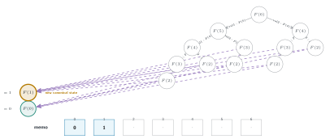
The array records values; graph arrows still point to canonical states.
Memo Block 03 -- memoize F(2)
F(2) now owns the canonical F(1) and F(0) dependencies. Every repeated F(2) subtree redirects here.
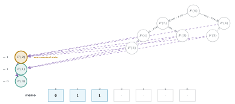
Memo Block 04 -- memoize F(3)
F(3) joins the left spine. Calls that previously expanded F(3) now reuse its completed value 2.
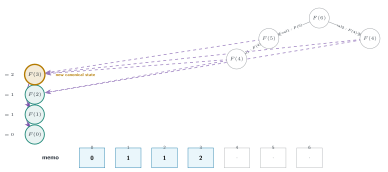
Memo Block 05 -- memoize F(4)
F(4) becomes one state with value 3; all equal calls collapse into this single dependency node.
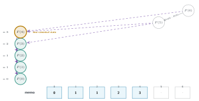
Memo Block 06 -- memoize F(5)
The root now depends on the stored values F(5)=5 and F(4)=3.
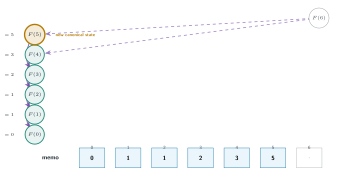
Memo Block 07 -- the final vertical DAG
Memoizing F(6) removes the final occurrence node. Straight arrows use n-1; curved arrows use n-2.
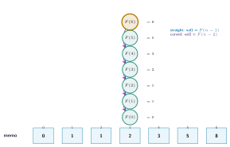
The 25-call tree is now a seven-state acyclic dependency graph.
Bottom-up Block 01 -- array code
The same recurrence is evaluated in dependency order, beginning with both base cells.
N = 6
dp = [0] * (N + 1)
# Base cases.
dp[0] = 0
dp[1] = 1
# Fill the array from left to right.
for n in range(2, N + 1):
val1 = dp[n - 1]
val2 = dp[n - 2]
dp[n] = val1 + val2
print(dp[N]) # 8
# Space note: only dp[n-1] and dp[n-2] are needed.
# The two-variable version is not shown here.Five following blocks show all updates: dp[2], dp[3], dp[4], dp[5], and dp[6].
Bottom-up Block 02 -- update dp[2]
Finalize dp[2] from the two cells immediately required by the recurrence.
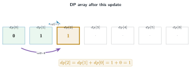
Earlier dependency edges remain faint; the two edges used now are bold.
Bottom-up Block 03 -- update dp[3]
Finalize dp[3] from the two cells immediately required by the recurrence.
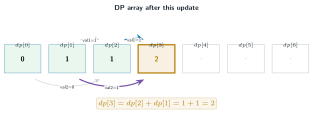
Earlier dependency edges remain faint; the two edges used now are bold.
Bottom-up Block 04 -- update dp[4]
Finalize dp[4] from the two cells immediately required by the recurrence.
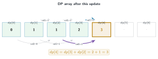
Earlier dependency edges remain faint; the two edges used now are bold.
Bottom-up Block 05 -- update dp[5]
Finalize dp[5] from the two cells immediately required by the recurrence.
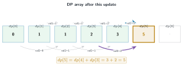
Earlier dependency edges remain faint; the two edges used now are bold.
Bottom-up Block 06 -- update dp[6]
Finalize dp[6] from the two cells immediately required by the recurrence.
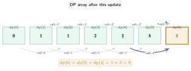
The full array uses O(N) space; retaining only the previous two values reduces auxiliary space to O(1).